Gerő Sándor budapesti patológus 40 éves tapasztalattal.
Riporter: Üdvözlöm, Gerő professzor. Az előzetes beszélgetésünk során bevallom, megdöbbentett. Még mindig nem tudom kiverni a fejemből a szavait:
"Az emberek azt hiszik, hogy a férgek a halál után falják fel őket, de valójában már akkor elkezdik belülről rágni a szervezetet, amíg élünk."
Gerő professzor: Ez tényleg így van. Az esetek majdnem 90%-ában, amikor boncolást végzek, ijesztő képet látok. A halottak testében hemzsegnek az élősködők! És nem csak a gyomor-bélrendszerben figyeltem meg őket, ahogy sokan gondolják. A paraziták gyakran élnek a tüdőben, a szívben, a májban és még az agyban is! Telepeik belső szervekben élnek, és a lárvák élő emberek szöveteivel táplálkoznak!
Tegnap boncoltam fel egy 50 éves nőt. Szívelégtelenségben halt meg. S hogy mi köze ennek a parazitákhoz? Az, hogy végtermékeik minden szerv, köztük a szív működésképtelenségét is okozzák. Rengeteg parazitát találtam a beleiben. Ilyen "vendégekkel" sajnos nem lehet sokáig élni.
klikk
Egy másik eset: Egy 61 éves férfi. Májzsugorban halt meg. A hozzátartozók szerint az alkohol a hibás. Csakhogy nem ivott sokat, és nem volt nyoma a máj alkohol okozta károsodásának, viszont a májat ellepték az élősködők, több száz járatot találtam, amelyeken keresztül a férgek vándoroltak.
klikk
Egy másik eset, ami még engem is megdöbbentett. Egy 49 éves beteg agyát teljesen ellepték a paraziták és lárváik. A halál oka iszkémiás agyvérzés volt. De ez csak egy következmény! Valójában a paraziták egyszerűen az emberi agyszövetből táplálkoztak, élve falták fel! A beteg élete során fejfájástól, alvás- és memóriaproblémáktól szenvedett. Aztán, amikor már sok területet érintett, az epilepszia is hozzáadódott. Hat hónappal később meghalt.
klikk
Egy másik, nemrégiben történt eset. A beteg paraziták által okozott bélrákban halt meg. A paraziták mérgezik az egészséges sejteket a toxinjaikkal, és arra kényszerítik őket, hogy újjáépüljenek, megváltoztatva a szerkezetüket. És pontosan rákos sejtekké alakulnak, amelyek agresszívabbak és képesek ellenállni a parazitáknak. Az emberek számára azonban ezek a sejtek romboló hatásúak. A daganat gyorsan növekszik és áttéteket képez. Az illető néhány hónapon belül meghal.
klikk
A paraziták "útvonalai" a bél lumenében
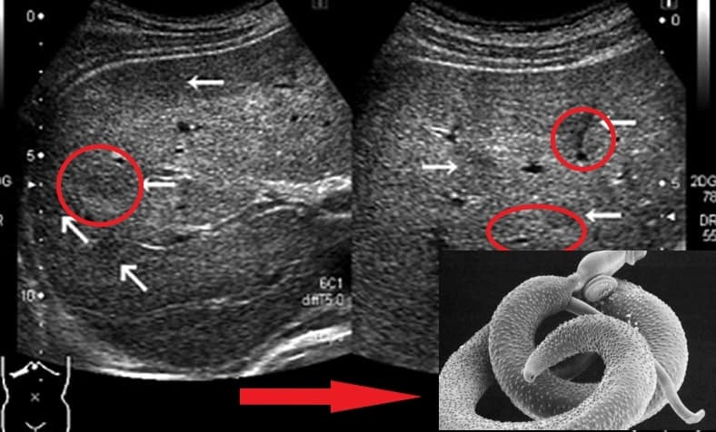Ez nem becslés, hanem pontos statisztika - a "természetes" halálozások 78%-át paraziták okozzák. Abszolút számokban ez körülbelül 1,5 millió halálesetet jelent csak a 2021-es évben.
"Az emberek a paraziták miatt halnak meg - ezek tönkreteszik a szerveket, toxinokkal mérgezik a vért, agy- és tüdőszövetből táplálkoznak!"
Riporter: Nem tudom elhinni! Szörnyen hangzik.
Gerő professzor: Egyébként tudta, hogy a súlyos Covid-19-es esetek 99,87%-a parazitafertőzött ember? Ha nem lennének "vendégeik", akkor tünetmentesek lennének. Tehát ez egy jelentős kockázati csopor Kollégáim és én rendszeresen találkozunk parazitafertőzöttséggel a koronavírus-fertőzésben elhunyt emberek boncolása során. Ismétlem, senki sem beszél erről, mert azonnal felmerülne a kérdés - mi az oka a sok parazitafertőzésnek?
Riporter: Mi okozza a széles körben elterjedt fertőzést? Miért szenvednek és halnak bele olyan sokan?
Gerő professzor: Az ok egyszerű. Vannak olyan betegségek hazánkban, amelyeket egyáltalán nem kezelnek. Van itt valaki, aki komolyan foglalkozik a parazitafertőzés problémájával? És lássuk be, hazánkban az emberek nem a legfelelősségteljesebbek. Akkor fordulnak orvoshoz, amikor már túl késő. Figyel valaki a hasi fájdalomra, székrekedésre, hasmenésre, puffadásra? És ezek azok a korai figyelmeztető jelek, amelyeket nem szabad figyelmen kívül hagyni.
Sok éve dolgozom patológusként. Láttam már olyan dolgokat, amitől égnek áll a haj! Az emberek alábecsülik a veszélyeket, azt hiszik, hogy a paraziták a beleikben élő giliszták. De ez nem teljesen igaz. A parazitáknak rengeteg faja létezik. Vannak például mikroszkopikus méretű, de nagyon mérgező fajták. Megmérgezik a szervezetet, bejutnak a véráramba, a szívbe, elöntik a méreganyagokkal; iszkémiához, szívelégtelenséghez, magas vérnyomáshoz, és ennek következtében szívrohamhoz és agyvérzéshez vezetnek. Letelepednek a tüdőben, a májban, behatolnak az agyba és még a szemekbe is!
A létfontosságú szerveket érintő bélférgek a Taenia solium (horgasfejű galandféreg), az Echinococcus granulosus (galandféreg) és a Trichinella spiralis (fonalféreg). Az Echinococcus az Echinococcus nemzetségbe tartozó férgek lárvastádiuma. És ez közel sem az összes parazita fajta, amelyek képesek megölni az embert.
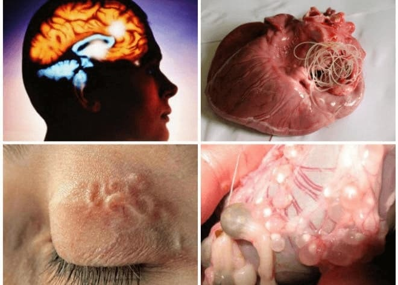Az orvosok azonban inkább a szívbetegség hatásait, mint az okát szokták kezelni. Hazánkban burjánzik a korrupció. Senki sem foglalkozik komolyan a problémával. A csalás széles körben elterjedt.
Riporter: Mit gondol, miért történik ez? Miért hagyják figyelmen kívül a széles körű parazitafertőzés problémáját hazánkban?
Gerő professzor: Igen, az emberek tömegesen halnak meg. Mi, patológusok csak a halál végső okát jegyezzük fel, és senki nem hangoztatja, hogy a parazitafertőzés halálhoz vezet, ez nem szokás.
Nem lehet a kapzsi tulajdonosok gyógyszeripari vállalataira hárítani a felelősséget. Hazánkban nem akarják értékesíteni a valóban hatékony készítményeket paraziták ellen, és megpróbálják külföldre küldeni azokat.
Riporter: Van egyáltalán ilyen készítmény? Hogyan védhetik meg magukat az emberek és menthetik meg az életüket?
Gerő professzor: Természetesen vannak ilyen készítmények. De nem lehet csak úgy megvenni őket a gyógyszertárban. A gyógyszertárakban árult és a rendelőkben felírt parazitaellenes készítményeknek egyetlen fontos funkciójuk van: a betegek zsebéből a pénzt az egészségügyi oligarchák zsebébe szippantani.
Csak gondoljon bele. A beteg beveszi a tablettát, és az állapota javulni látszik. De a paraziták rendkívül ellenállóak! Tojásaiknak rendkívül kemény héja van. És amint a készítmény már nem hat, újra elszaporodnak, lárváik belülről emésztik fel a szervezetet, a véráramlással behatolnak a szívbe, a tüdőbe, a májba és az agyba. A szívizom meggyengül, gyorsan elhasználódik, az immunitás csökken és rákos megbetegedések lépnek fel.
A parazita telepek milliói behatolnak az egész testbe, és képesek beszivárogni a szívbe, a tüdőbe, a vesébe, a májba, sőt még az agyba is!
Sokan úgy gondolják, hogy csak be kell venniük egy tablettát, és a probléma megoldódik. De ez nem így van! Egy tabletta nem elég, ez egyszerűen nem lehetséges! Ha pedig állandóan durva vegyszereket fogyaszt, azok még a parazitáknál is gyorsabban tönkreteszik a szervezetet. Ez egy ördögi kör. De a gyógyszertárak számára nyereséges az értékesítésük, mivel a parazitaellenes készítmények drágák. Minél többet vásárolnak ezekből, annál gazdagabbak lesznek a gyógyszertárak és a gyógyszertári üzletág.
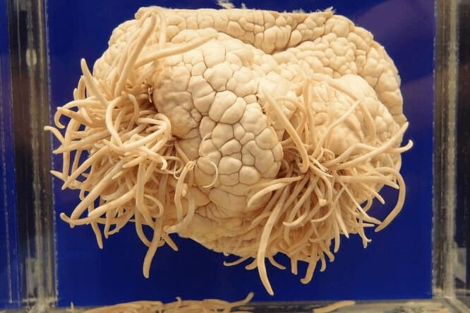Parazitákkal fertőzött agy
Riporter: És mit kell tennie a hétköznapi embereknek?
Gerő professzor: Mit kell tenniük? Küzdeni a korrupt rendszerünk ellen. Nem szabad megakadályozni, hogy a gyógyszertárakba eljusannak a hatékony készítmények, nem szabad megemelni a hatékony termékek árát, nem szabad külföldön eladni azokat!
És az embereknek maguknak nem szabad lustának lenniük, cselekedniük kell a fertőzés első tüneteinél, ahelyett, hogy megvárnák, hogy a paraziták végezzenek velük.
Riporter: Beszélt valamilyen jó készítményről, ami megszabadíthat a parazitáktól? Mi ez a termék?
Gerő professzor: Igen, a termékre gondoltam. Egyedülálló és KIVÉTELES kétfázisú készítmény, amely minden típusú parazitát képes elpusztítani, ugyanakkor az ember számára teljesen biztonságos.
— a Molekuláris Biológiai Központ fejlesztése. A genfi nemzetközi kongresszuson megkapta az európai orvostudományi áttörés díját, és a világ vezető parazitológusai is elismerték.
Ellentétben a hasonló termékekkel, a egy nagyon erős, mégis teljesen természetes komplexum.
Kúraszerű alkalmazása esetén a nemcsak a parazitákat szünteti meg teljesen, hanem javítja a bélflórát, erősíti az immunrendszert és helyreállítja a szervezetet a mérgezés után.
Úgy tűnhet, hogy egy ilyen felismerés után a gyógyszertáraknak sorban kellene állniuk a értékesítésének jogáért. Az államnak számolnia kellene ezzel a készítménnyel. De nem. Teljes, síri csend. Mintha senki sem vette volna észre ezt az áttörést.
A hatásait vizsgáló klinikai vizsgálat eredményei 1250 résztvevővel.
|
100% |
Tisztítás parazitás fertőzések esetén |
|
100% |
A gyomor-bélrendszer működésének normalizálása |
|
80% |
A vércukorszint normalizálása |
|
75% |
Közérzet javulása |
|
70% |
Egyszer sem betegedtek meg a kúra után |
Riporter: És mennyi ideig kell szednem ezeket a kapszulákat, hogy garantáltan megtisztuljon a szervezetem?
Gerő professzor: A fokozatosan tisztít, következetesen, lépésről lépésre hat:
1. hét
A fáradtság és az apátia elmúlik a paraziták csökkentett toxikus hatása miatt. Az emésztés és az étvágy normalizálódik. Már a kúra első hetében javulást fog tapasztalni a hangulatában és a teljesítményében.
2-3. hét
A növényi kivonatok további egészségfokozó hatásainak köszönhetően az immunrendszere megerősödik, az allergiák és egyéb egészségügyi problémák csökkennek.
4-5. hét
Amint a paraziták mérgező hatása megszűnik a szervezetre, egyértelmű külső javulást, sőt fiatalító hatást is tapasztalhat. A bőrkiütések, beleértve a papillómákat is, kezdenek eltűnni.
6-7. hét
Az emésztőrendszer és minden belső folyamat normalizálódik, csökken a súly, a vérnyomás normalizálódik, és a szív egy svájci óra pontosságával fog működni. A kúra után sokan megszabadulnak az őket évek óta kínzó egészségügyi problémáktól. Ezzel 10-15 évvel meghosszabbíthatja az életét!
Szabaduljon meg 7 betegségtől 7 hét alatt!
Riporter: Milyen eredményekre lehet számítani a tisztítókúra után? Hogyan javul az állapot?
Gerő professzor: Egy kúra elvégzésével nagyon sok pozitív hatásra lehet számítani! Végül is a paraziták káros hatással vannak az egész szervezetre. A kúra elvégzése után a test teljesen megtisztul, sokan azt mondják, hogy úgy érzik, mintha újjászülettek volna.
Bizonyosodjon meg róla ön is:
1. A vérnyomás normalizálódik
Először is, ez a szív és az erek teljes megújulása. A 7 hetes rendszeres fogyasztása teljesen megtisztítja az érrendszert. Más szóval, az erek életre kelnek, és gond nélkül "tompítják" a vérnyomás ingadozásait. Az erek kiegyenlítik a különbséget, és stabilan tartják a 120/80-as nyomást.
2. Javul az agy vérellátása
Egy kúra után a vér 73%-ban megtisztul és az agyi keringés javul.
A páciensek örömmel veszik tudomásul, hogy:
- Javul a memória.
- Az alvás normalizálódik, a levertség és a gyengeség megszűnik.
- Megszünteti fülzúgást.
- Megszűnnek a gyakori fejfájások.
3. A szaruhártya és a retina regenerálódik és javul a látás.
A nemcsak a nagy ereket és artériákat, hanem a legkisebb hajszálereket is megtisztítja a paraziták által okozott toxinoktól. A szemekben különösen sok van belőlük. Ez a retinasejtek megújulásához és a szem izomtónusának javulásához vezet.
- A látásélesség 0,5-2,1 egységgel javul.
- A szemnyomás normalizálódik.
- A szürkehályog tünetei csökkennek.
4. A duzzanatok elmúlnak
Helyreáll a megfelelő veseműködés és folyadékcsere a szervezetben. A vesék nem tartják vissza a vizet, és nincs szükség vízhajtók alkalmazására.
- Nincs több fájó vagy duzzadt láb.
- A has mérete csökken, mert a szervek duzzanata megszűnik.
- A folyadék távozik a tüdőből, megkönnyítve a légzést.
5. A gyomor- és bélpanaszok nem kínozzák többé.
A legkifejezettebb problémákat a paraziták okozzák:
- Puffadás, fokozott gázképződés, böfögés.
- Székletproblémák.
- Emésztési zavarok, rossz szájszag.
- Gyomorhurut, gyomorfekély, gyomorégés, savtúltengés.
6. A szív működése helyreáll
A paraziták kipucolása pozitív hatással van a szívizom tónusára. Az esetek 93%-ában a tachikardia megszűnik, és 99%-ban az iszkémia is.
- A szívritmus és a pulzus normalizálódik.
- A szívfájdalmak elmúlnak.
- A szívroham kockázata tizenhétszeresére csökken.
7. A bőr állapota javul
- A papillómák és a szemölcsök eltűnnek.
- A bőr tisztább, hidratáltabb és a ráncok kisimulnak.
- A kiütések, a pattanások eltűnnek, az arcbőr üde lesz.
Az immunrendszer teljes sebességre kapcsol és véd a rák ellen!
Az immunitás a bélrendszerben alakul ki. A paraziták pedig valóban gyengítik szervezetünk immunvédelmét. Az immunitás nem csak a vírusok elleni védelmet jelenti, hanem a mostanában divatos Covid-19 ellen is. Az erős immunrendszer fő feladata a rákos sejtek elleni védelem. Az erős immunrendszer időben felismeri és elpusztítja a rákos sejteket. Megakadályozza a daganat kialakulását.
A legalább 50%-ban működő immunrendszer már leküzdhetetlen akadályt jelent a vírusokkal szemben. És ez manapság nagyon fontos.
Szabaduljon meg a parazitáktól és hosszabbítsa meg az életét 15-18 évvel!
Riporter: Azt mondta, hogy a gyógyszertárakban nem lehet t kapni. De azért még meg lehet szerezni, nem igaz?
Gerő professzor: Igen, minden magyar állampolgár megrendelheti a t online, közvetlenül a gyártól, különleges kedvezményes program keretein belül.
Riporter: Miért csak online kapható ez a készítmény?
Gerő professzor: Ennek három oka van:
- Minőséggarancia. A készítményt a gyárból egyenesen az ügyfélhez szállítják.
- A közvetítőkkel szembeni védelem. Hogy senki ne tudjon 10-20-30 ezreket keresni a viszonteladáson.
- Gyors kiszállítás.
Regionális kedvezmények a nyugdíjasoknak!
Gerő professzor: Jelenleg fut egy szociális támogatási program. E program keretében megrendelheti a terméket akár 50-os% kedvezménnyel.
Ezért azt tanácsolom, hogy ne vesztegessék az időt! Nem lesz még egy ilyen lehetőség. Nem tudni, meddig tart a program, illetve meddig tart ki a készlet.
Gerő professzor: Hogy megszerezze az akár 50%-os kedvezményt a termékre, nyissa ki az egyik ajtót és szerezzen személyes kedvezményt.
Akció érvényességi ideje - (bezárólag)! Ezt követően a termék csak piaci áron vásárolható meg, ami csomagonként.
FIGYELEM: A forgalmazó promóciójának részeként a akár 50%-os kedvezménnyel kapható. A promóciós termékek száma korlátozott.
KIFEJEZETTEN OLVASÓINK SZÁMÁRA KÖZZÉTESSZÜK A KÉSZÍTMÉNYRE VONATKOZÓ HIVATALOS SORSOLÁST.
A FENNMARADÓ KEDVEZMÉNYES AJÁNLATOK SZÉTOSZTÁSRA KERÜLNEK AZ IGÉNYLŐK KÖZÖTT
IDŐPONTIG BEZÁRÓLAG!
8 hónappal ezelőtt rendeltem t, akkor még nem volt kedvezményes program. Olvastam, hogy egy nő meghalt egy gyógyszertári parazita elleni készítménytől (nem említem a nevét). Nagyon megijedtem tőle, és elkezdtem keresni valami enyhébbet és hatékonyabbat. Biztosan nem mérgezném a szervezetemet! Így találtam rá a készítményre. Mezőgazdaságban dolgozunk, állandóan érintkezünk a talajjal, és rendszeresen meg kell tisztítanunk magunkat mindenféle szennyeződéstől. t szedtünk, és most már sokkal jobban érezzük magunkat. Mostantól mindenkinek ajánljuk a t!
Tegnap átvettem a csomagot! Holnap kezdem a kúrát, remélve, hogy javul a közérzetem és a bőröm állapota is. Egyébként nagyon gyors a szállítás!
Már régóta fáj a hasam, hiába voltam orvosnál, de hiába. Vérvétel, vizelet, kardiogram, mind megtörtént, de senki nem akar parazitákra megvizsgálni! Csináltam egy tesztet itt a honlapon, és minden tünetem megvan - gyengeség, papillómák, egy hétig nem tudok WC-re menni. Rendeltem t, amíg lehet, köszönöm, hogy meséltek róla.
Megrémített a története! Köszönöm, hogy nem félt megosztani. Ma vettem át a csomagomat. Köszönöm.
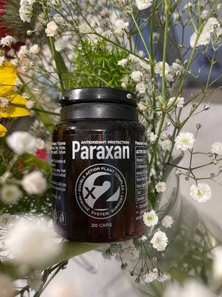
Ezért nem szabad forgalmazni a gyógyszertárakban. Mi tudjuk használni a számítógépet, de mi van a többi emberrel? Az én anyukám egy idős falusi asszony, sokat műveli a kertet és állatokat gondoz, pont ezért is aggódom miatta. Vele meg a szomszédaival mi legyen? Azt hiszem, szerencsések vagyunk, hogy elolvastuk és megrendelhetjük a program részeként. De aki nem olvasta, nem fogja megtudni.
Valami szörnyűség! Nem tudtam, hogy a paraziták ilyen súlyos betegségeket okozhatnak!
Köszönjük a hasznos információkat. A készítményt egy hónapig szedtük, én és a férjem azóta SOKKAL jobban érezzük magunkat.
A tesztek megerősítették, parazitáim vannak. Engem is a gyógyszertárba küldtek, ráadásul cukorbeteg vagyok és a vesémmel is gondok vannak. Úgy döntöttem, hogy inkább t vásárolok, kedvezményesen megrendelhető, az összetétel pedig természetes, ami azt jelenti, hogy nem fog ártani.
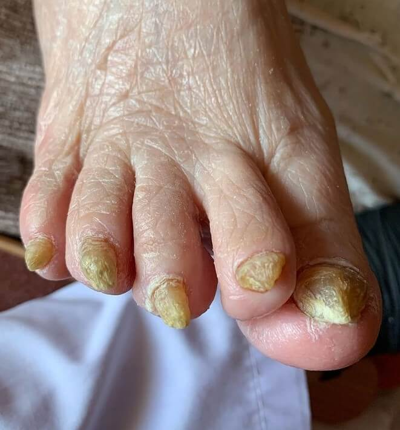
Mégis mit gondoltak? Hogy most rohannak és elkezdik a jó termékeket eladni nekünk? Azt adják el, amiért fizetnek nekik. Idióták és torzszülöttek országa!
Ó srácok, először nem gondoltam, hogy a paraziták okozzák a problémáimat. A papillómák is kijöttek, pedig korábban soha nem voltak. Igaza van ennek az orvosnak... Csak akkor fordulunk segítségért, amikor már késő. A végén már a szívemmel és a májammal is gondok voltak. Ezért rendeltem ezt a t, és elkezdtem az utasításoknak megfelelően alkalmazni. Ami kijött belőlem két nappal később! Aki finnyás inkább ne nézze.
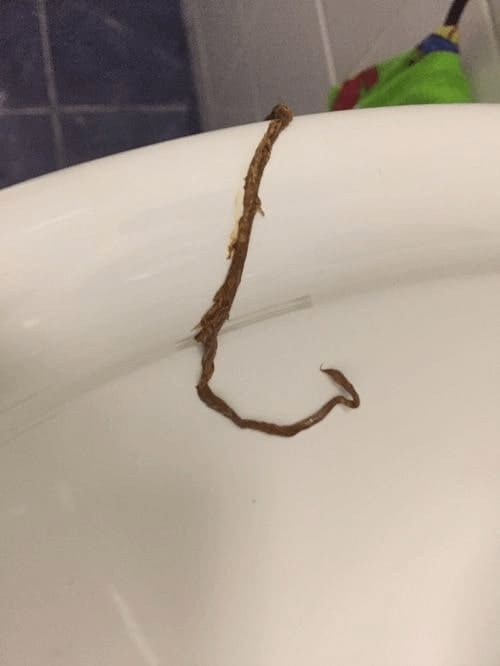
A kihozta belőlem a parazitákat. Úgy érzem, mintha újjászülettem volna! Ha csak korábban tudtam volna, hogy ezek a paraziták okozzák a betegségemet! Most megrendeltem az egész családnak, míg tart az akció.
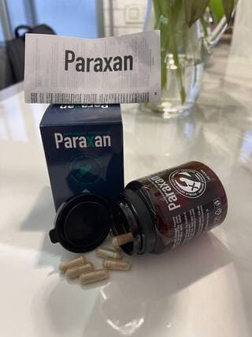
A férjemmel gyakran voltunk betegek, hol az egyik, hol a másik. Problémák voltak a beleinkkel, de nem gondoltuk, hogy paraziták. És amikor a férjemnek akut vakbélgyulladása volt, és mentővel vitték el, az orvos azt mondta nekem, hogy a műtét során parazitákat találtak benne! Egyszerűen sokkot kaptam. Mindketten elvégeztünk egy kúrát ezután. Ha tudnák, mennyi undormány jött ki belőlünk! Azt szavakkal nem lehet leírni. Ijesztő, rendszeresen tisztítani kell a testet!
Kedves anyukák! Ez hátborzongató! Nem tudtam, hogy a paraziták ilyen problémákat okoznak, sokat tanultam a cikkből. Vettem egy kúrát akciósan, minden esetre beszedem, mert gyakran van vérnyomásom és tachikardiám. A szívvel nem szabad viccelni.
Ha már ki szabad ilyet tenni, nézzék meg, mi jött ki belőle a után. Ledöbbentem, amikor megláttam.
Igen, ezek a sztorik tényleg félelmetesek. Egy ismerősömet egyenesen a munkahelyéről vitték az intenzív osztályra, mert hirtelen nagyon rosszul lett. Kiderült, hogy a paraziták a hibásak! Képzeljék el, élve falták belülről, ő meg nem is tudott róla. Alig húzták vissza a másvilágról.
Köszönöm doktor úr a tanácsot. Rendeltem t, az egész családdal irtani fogjuk a parazitákat, mert nagyon megrémítettek ezekkel a történetekkel.
Én is t használtam a paraziták ellen. Úgy érzem, mintha újjászülettem volna. Bárcsak korábban tudtam volna, hogy minden nyavalyám okozója a paraziták. Most megrendeltem az egész családnak: a fiamnak, lányomnak, amíg tart a kedvezmény. Ma vettem át a csomagot.
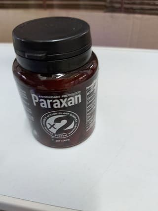
Köszönöm a hasznos információkat, a cikk sokat segített. Gyomor-bélrendszeri problémáim voltak, egy hónapig szedtem a t, a gyomrom megszűnt fájni, és a szívem sem zargat. Jó készítmény.
Ha ilyen jó ez a termék, miért nem árulják a patikákban? Miért kell a neten rendelni?
Anna, hát írták, hogy a terméket főleg külföldre értékesítik.
Jé, itt a kedvenc om. Évente kétszer elvégzek vele egy kúrát. Már régóta ismerem. Természetes, és nem károsítja a szervezetet, de pillanatok alatt kivezeti az összes élősködőt.
A paraziták nem vicc. Magamról tudom. Ha csak egy-két tünet is van, a tisztítókúra nem árt a szervezetednek! Úgy gondolom, hogy minden embernek rendszeresen el kell végeznie a megelőző intézkedéseket. Különösen azoknak, akik a földeken dolgoznak, mint én.
A nal végeztem tisztítókúrát. Ég és föld az egészség szempontjából. Előtte pedig mi mindenre nem kezeltek! Magas vérnyomás, aritmia... És amint kipucoltam a szervezetemet, minden bajom elmúlt. Úgy érzem, mintha 20 évet fiatalodtam volna.
Az egészségügyben dolgozom, évekig tanultunk ezekről, de még mindig undorral tölt el a látványuk. Aki már látott parazitákat boncoláskor, soha nem fogja elfelejteni. Jó, hogy végre rájöttek, hogyan lehet teljesen kivezetni őket. Én is a t ajánlom minden betegemnek.
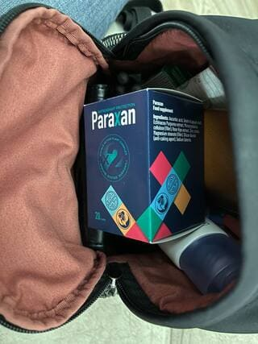
Én is az egészségügyben dolgozom. Mit nem láttam már eddig... Az emberek nem akarják elhinni, hogy a parazitákkal milyen könnyű megfertőződni. Nem tudom, hogy engednek-e posztolni ilyesmit, de úgy hiszem, sokaknak tanulságos lesz. A beteg mintája laboratóriumi mikroszkóp alatt
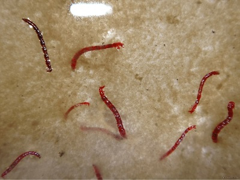
Egy orvos ismerősöm tanácsára végeztem el egy kúrát, amúgy kardiológus. Márciusban fejeztem be. Elmondhatom, hogy az immunrendszerre is nagyon erősen hat. Azóta egyszer sem voltam beteg, pedig mindenki tüsszögött körülöttem.
Részt vettem a nyereményjátékban, nagyon jó kedvezményt kaptam, az összeg minimális lett. Örömömben úgy döntöttem, hogy elvégzem a teljes kúrát, megtisztítom a szervezetemet. A csomag Ceglédre 3 nap alatt megérkezett. Elégedett vagyok a konzultációval is, a menedzser nagyon kedves volt, látszik, hogy igazi szakértő. Utánvéttel fizettem.
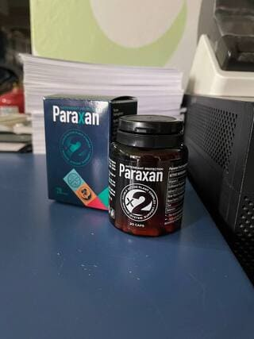
Mindannyian várunk egy jó készítményt, reménykedve az orvostudományban. De elsősorban mindenki a saját egészségéért felelős. Normális kell étkezni, sportolni és rendszeresen kezet mosni. És rendszeresen kúrát végezni. Először tegyenek valamit az egészségükért, aztán szidják az orvosokat.
A kiválóan működik. Ha az utasításoknak megfelelően szedi, 2-3 nap, és már el is kezdenek kijönni a paraziták. Nagyon ijesztően néz ki. De sokkal ijesztőbb, ha bennünk élnek!
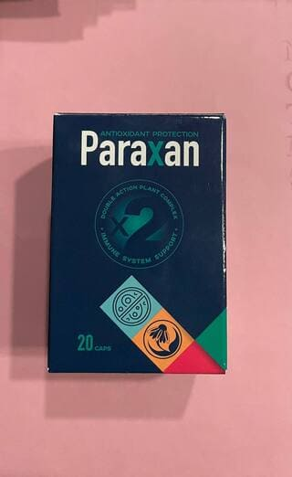
Nemrég néztem egy műsort az emberi parazitákról. Azt mondták, férgek vannak az agyban, a szívben és a tüdőben is... kész horror! Mutattak egy férfit, még a szeméből is kimásztak, mindene tele volt velük.
Nemrég hallottam a termékről. Itt van egy kép egy orsóféregről, és a még rosszabb férgeket is ki tud üldözni. Ízletes falat vagyunk számukra. Azt hittem, allergiás vagyok és hipertóniás, de kiderült, hogy csak otthon vagyok ezeknek a srácoknak.
A természetesen segített!
Istenem, milyen szörnyű! Mindenképpen megrendelem ezt a t, amíg a promóció folyik. Nincs szükségem ilyen bérlőkre.
Paraziták vannak mindenhol! Új típusokat azonosítottak, amelyek a csontokban és a kötőszövetekben telepednek le. Artrózist és gyulladást is okoznak. Minél többet tanulok, annál inkább azt gondolom, hogy paraziták nélkül az ember 15-20 évvel tovább élne. Végül is elpusztítanak minket és felgyorsítják az öregedést.
Ez jött ki belőlem a után, megdöbbentem, amikor megláttam!
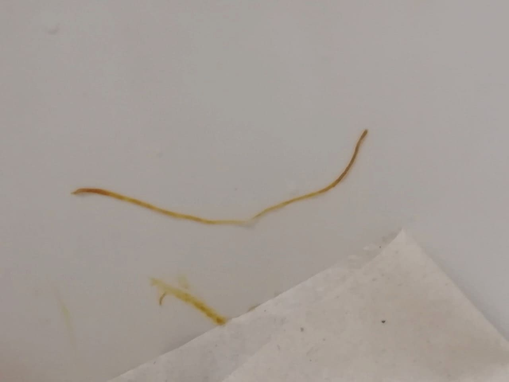
Ha vannak papillómák, plusz a gyomor fáj, akkor ezek határozottan paraziták. Erősen ajánlom a szedését. Nekem minden tünetem elmúlt a tisztítás után.
Jézusom, az emberek nem tudják, hogy rendszeresen meg kell tisztítani a testünket, különösen, ha mezítláb szeretünk strandolni. Korábban különböző készítményekkel kellett kísérletezni, hogy megtaláljuk, mi az, ami működik. Végre itt a , és nem ismerek senkit, akinek ne segített volna. Fordítsanak több időt az egészségükre inkább, és ne fotókat töltsenek fel a netre.
Megrendeltem, és tényleg jó kedvezményt adtak. Köszönöm az ilyen kedvezményes programot. Mostanában egyre rosszabbul érzem magam, mintha valaki tényleg kiszívná az erőmet. Megpróbálom kitisztítani a szervezetemet.
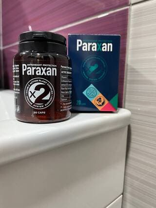
Libabőrös lettem ezektől az információktól és hozzászólásoktól. Ijesztő belegondolni, hogy mindez bennem is élhet. Talán már bennem is vannak.
Az emberek 99%-a paraziták hordozója! Csak az immunrendszerünk tartja kordában őket. Magam is rendszeresen csinálok tisztítókúrát, de régebben saját magamnak készítettem főzetet, most 4-5 hétig szedem a t is. Ha kipróbálják, meg fognak lepődni, mekkora különbséget jelent a közérzetben, ha a szervezet tiszta!
Nagyon ijesztő! Kutyákat tartunk és rendszeresen adunk nekik féreghajtót. Időnként magunk is iszunk főzetet. De valami azt súgja, hogy teljes tisztítókúrára van szükségünk... Kipróbálom a t, jó az összetétele és még akciós is.
Második hete szedem a t, egyszerűen le vagyok döbbenve, mi megy végbe a szervezetemben. Pedig azt hittem, hogy nincs semmi bajom, és csak megelőzésre van szükségem. És ami kimászott belőlem! Le sem tudom írni. El sem tudják képzelni, mi jött ki belőlem.
Istenem! Micsoda rémálom!!! Azonnal meghaltam volna, ha ilyet észrevettem volna magamban…
Végezzen el egy kúrát és nem fog látni ilyesmit. Néhány kilogramm ilyen betolakodó boldogan élhet bennünk.
Nővérként dolgozom egy kórházban. Néha jelen vagyok a műtéteknél. Volt olyan, hogy előttem másztak elő a paraziták a szívből. A saját szememmel láttam. Rendszeresen szedek féreghajtót, de a komolyabb, mint a gyógyszertári készítmények.
Ismerem ezt a készítményt. A tavaly szedtem a t. Az orvos írta fel, nem titkolt semmit. Azonnal azt mondta, hogy meg kell tisztítanom a szervezetemet, különben az allergia súlyosbodni fog és a szervezetem meg fog mérgeződni. A sokat segített. Örülök, hogy most akciósan kapható. Hagytam megrendelést.
Az utasítások szerint szedem. A telefonban elmondták, milyen fontos a teljes kúra elvégzése. A kedvezménnyel nem került sokba, és betartom az utasításokat. Reggel és este. Lehet napközben is bevenni.

Basszus, a vizsgálatok kimutatták, hogy parazitáim vannak. Engem is a gyógyszertárba küldtek, ráadásul cukorbeteg vagyok és a vesémmel is gondok vannak. Olvasgattam és úgy döntöttem, jobb, ha megveszem a t. Most, hogy akciós, fillérekbe kerül, és az összetétel is természetes, ami azt jelenti, hogy nem káros.
Egyáltalán nem hittem, hogy paraziták élnek bennem, és amikor elolvastam a tüneteket, minden összeállt a fejemben. A papillómák is kijöttek, pedig korábban soha nem voltak. És a szívem is elkezdett fájni. Ezért megrendeltem a t és elkezdtem szedni. Már nem fáj a szívem és a papillómák leszáradtak. Tuti, hogy a paraziták okozták.